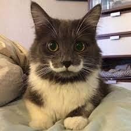
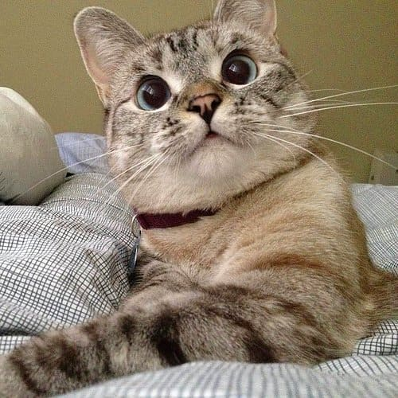
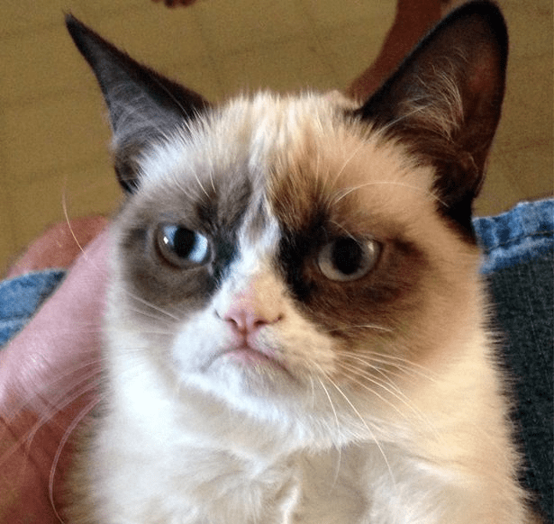
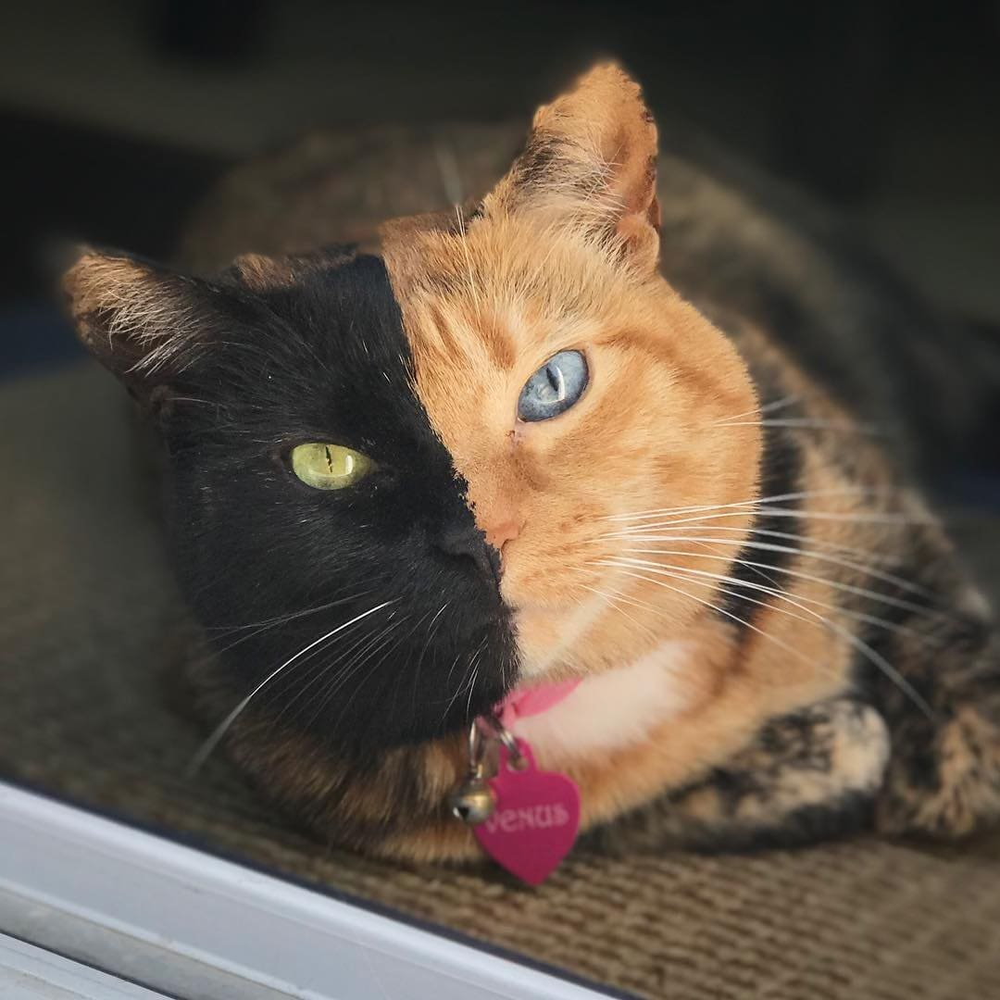
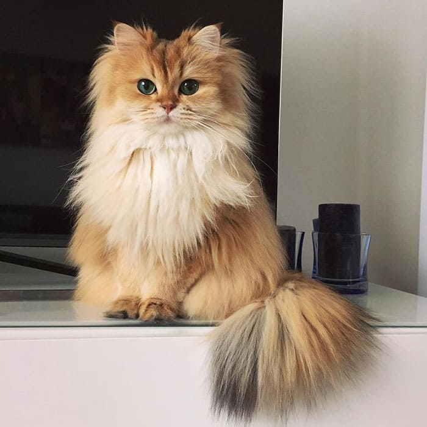
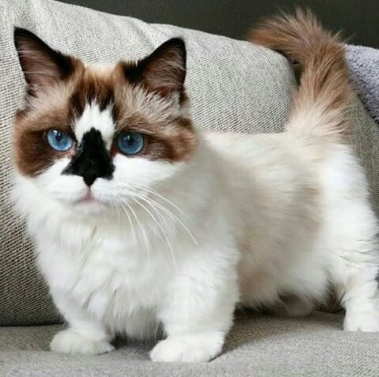
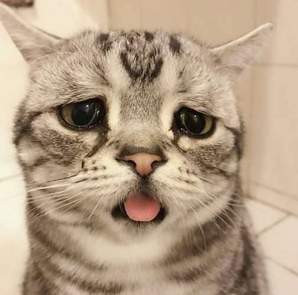
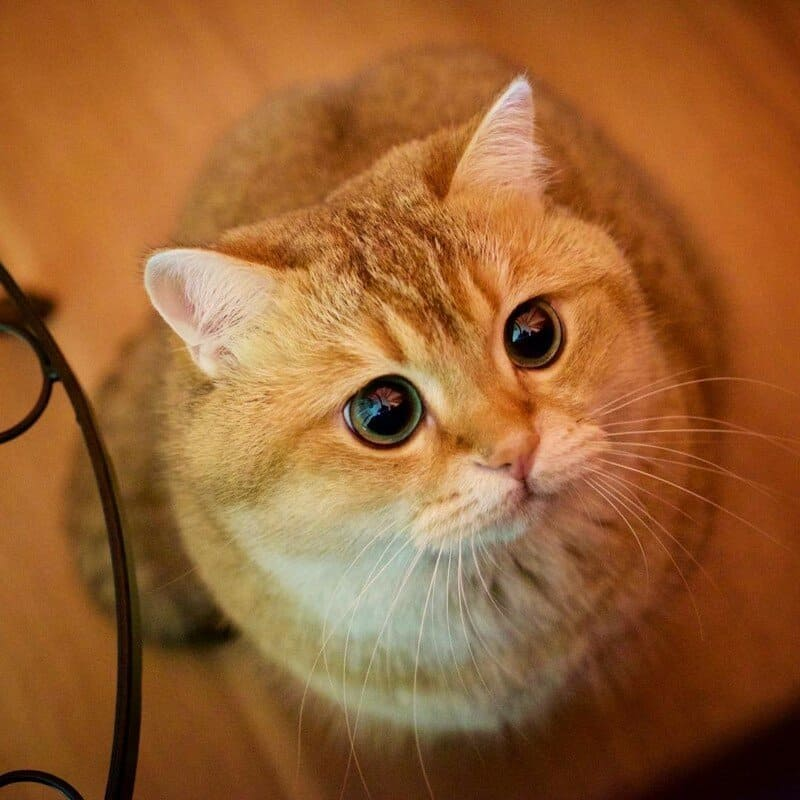
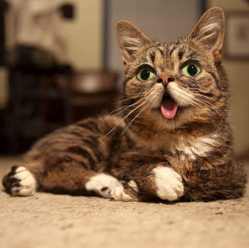

Коби
КобиВозраст: более 7 лет
Порода: британец
Болезни: нет
Статус: модель
Коби родился в США в марте 2015 года. Кот Коби появился в Instagram в июне 2015 года.
Огромные синие глаза с густо-чёрной подводкой и ослепительно белая шерсть принесли ему
сотни тысяч подписчиков и миллионы лайков.

Гамильтон
Возраст: 14 лет
Порода: мейн-кун
Болезни: нет
Статус: усач
Возраст: 14 лет
Порода: мейн-кун
Болезни: нет
Статус: усач
Кот по кличке Гамильтон родился с рисунком на морде, который точь-в-точь похож на усы.
Хозяин кота американец Джей Стов взял 11-месячного Гамильтона из приюта для животных.

Нала
Возраст: 10 лет
Порода: смесь сиамской и полосатой
Болезни: нет
Статус: топ 1 кот инстаграм
Возраст: 10 лет
Порода: смесь сиамской и полосатой
Болезни: нет
Статус: топ 1 кот инстаграм
Нала является самой популярной кошкой на Instagram, число подписчиков
которой перевалило за 4 миллиона!
Эта восхитительная кошка с круглыми голубыми глазами не всегда была окружена
любовью - будучи крошечным котенком, она была сдана в приют,
где находилась какое-то время.
К счастью, она нашла любящего хозяина и теперь наслаждается своей прекрасной жизнью.

Сердитый кот
Возраст: умер в 7 лет :(
Порода: сноу-шу
Болезни: инфекция мочевого пузыря
Статус: самый узнаваемый кот
Возраст: умер в 7 лет :(
Порода: сноу-шу
Болезни: инфекция мочевого пузыря
Статус: самый узнаваемый кот
Кошка, ставшая благодаря необычной внешности интернет-знаменитостью после того,
как брат её хозяйки в сентябре 2012 года разместил фотографию кошки на сайте Reddit.

Венера
Возраст: 12 лет
Порода: нет
Болезни: нет
Статус: химера
Возраст: 12 лет
Порода: нет
Болезни: нет
Статус: химера
Кошка по кличке Венера из Аргентины — обладательница редкой генетической аномалии,
которая разделила морду животного буквально пополам.
Ее правая сторона — рыжая с золотисто-зеленым глазом, другая — черная с ярко-синим.

Смузи
Возраст: 7 лет
Порода: британская длинношерстная
Болезни: нет
Статус: самая фотогеничная кошка
Возраст: 7 лет
Порода: британская длинношерстная
Болезни: нет
Статус: самая фотогеничная кошка
Смузи — пушистый комочек милоты, являющийся самой фотогеничной кошкой в мире.
Её шерсть длинна и шелковиста, её глаза как два горящих изумруда, смотрящих прямо в душу,
её милота буквально разрывает Instagram.

Альберт
Возраст: более 7 лет
Порода: манчкин
Болезни: нет
Статус: самая популярный манчкин
Возраст: более 7 лет
Порода: манчкин
Болезни: нет
Статус: самая популярный манчкин
Манчкин по кличке Альберт известен в инстаграме не только благодаря своим коротеньким лапкам,
но и уникальной окраской его носа, которая напоминает череп.

Луху
Возраст: более 7 лет
Порода: нет
Болезни: нет
Статус: самая грустная кошка
Возраст: более 7 лет
Порода: нет
Болезни: нет
Статус: самая грустная кошка
Кошка Луху из Пекина с постоянно грустным выражением мордочки вызвала интерес
пользователей всемирной Сети.
Такой вид кошке придают опущенные уголки глаз и нахмуренные брови.

Хосико
Возраст: 6 лет
Порода: шотландская прямоухая
Болезни: нет
Статус: кот из Шрека
Возраст: 6 лет
Порода: шотландская прямоухая
Болезни: нет
Статус: кот из Шрека
Котик из Москвы, который, словно, заманивает и зачаровывает, сделал породу
скоттиш-страйт особенно популярной.
Разумеется, каждая выходка забавного пушистика запечатлевалась на фото.
Именно фотографии познакомили мир с красавцем, так похожим на кота
в сапогах из мультфильма «Шрек».

Лил Баб
Возраст: умерла в 8 лет :(
Порода: полосатая кошка-карлица
Болезни: костная инфекция
Статус: милота
Возраст: умерла в 8 лет :(
Порода: полосатая кошка-карлица
Болезни: костная инфекция
Статус: милота
Американская кошка, известная своим уникальным внешним видом.
Лил Баб была самой маленькой в своем выводке, рождённой от дикой матери.
Она родилась с несколькими генетическими мутациями, её пришлось кормить из бутылочки,
и ей было трудно быть усыновлённой. У Лил Баб была крайняя форма кошачьей карликовости,
которая заставляла ее конечности и нижнюю челюсть быть довольно маленькими по сравнению
с остальной частью ее тела. Укороченная нижняя челюсть означала, что, помимо всего прочего,
она не могла удержать язык во рту.